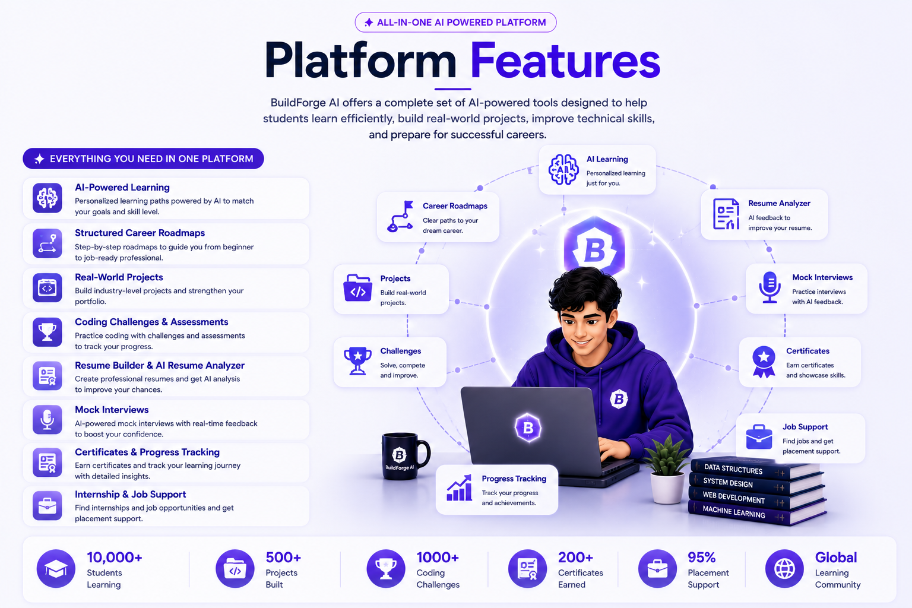
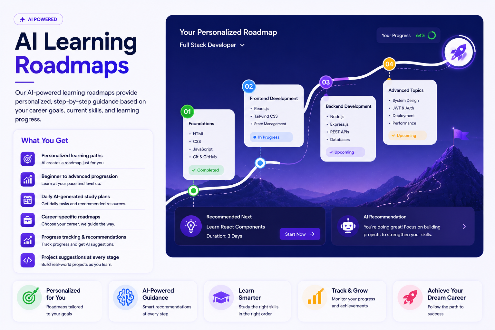
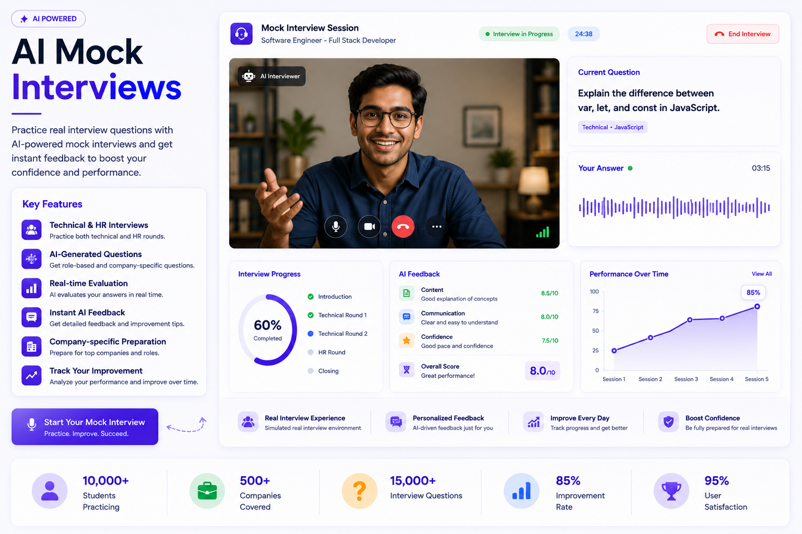
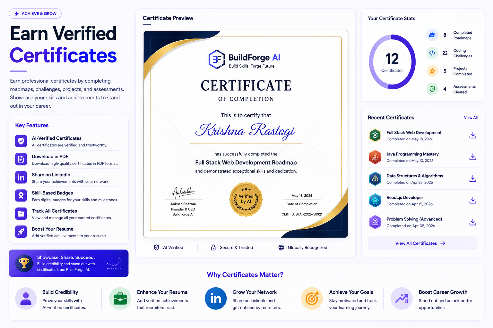
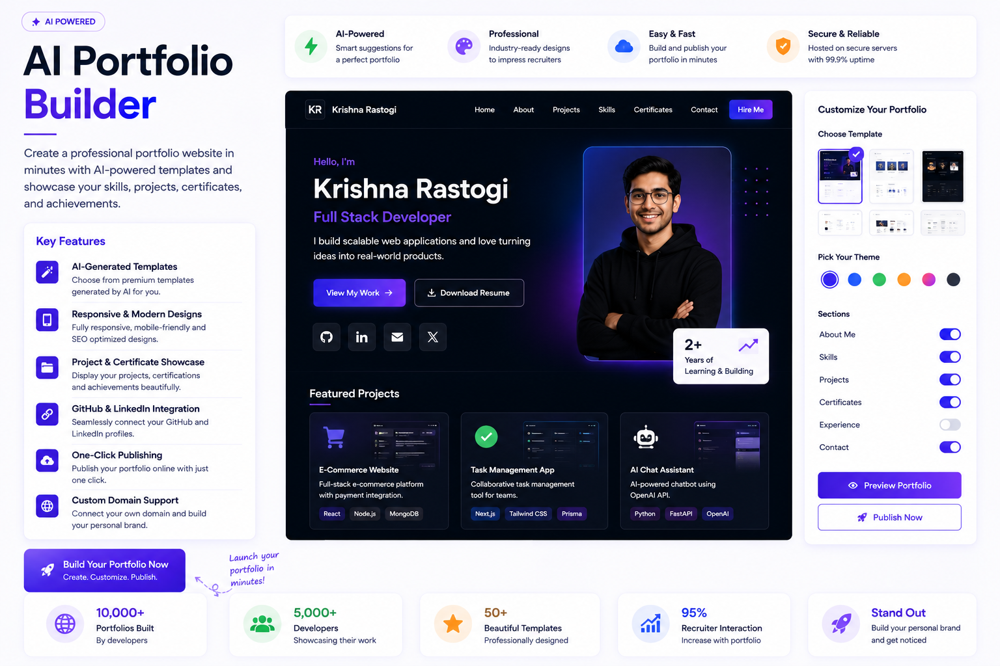
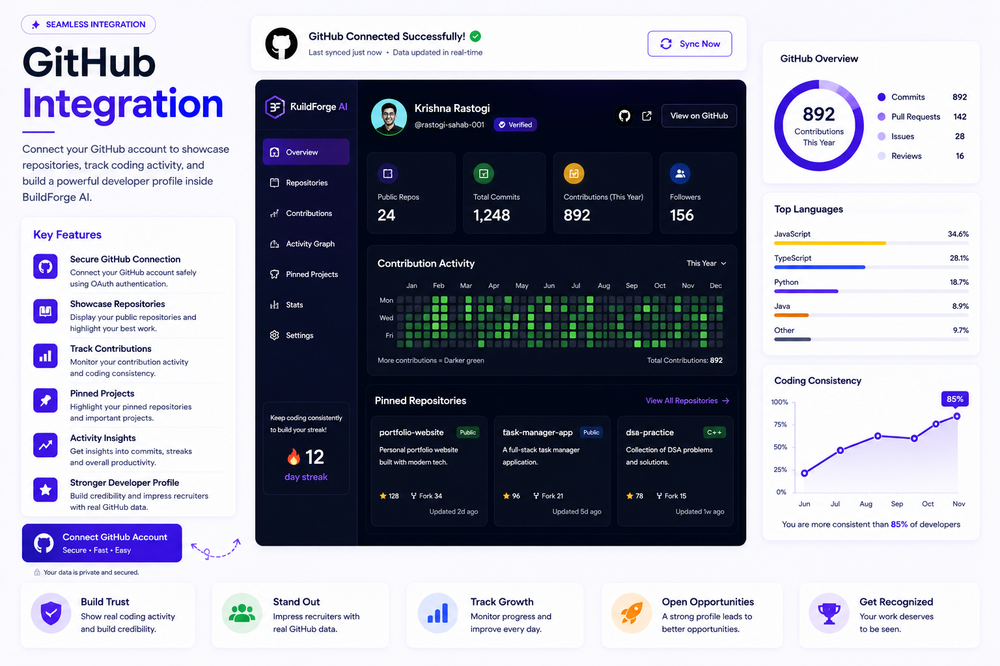
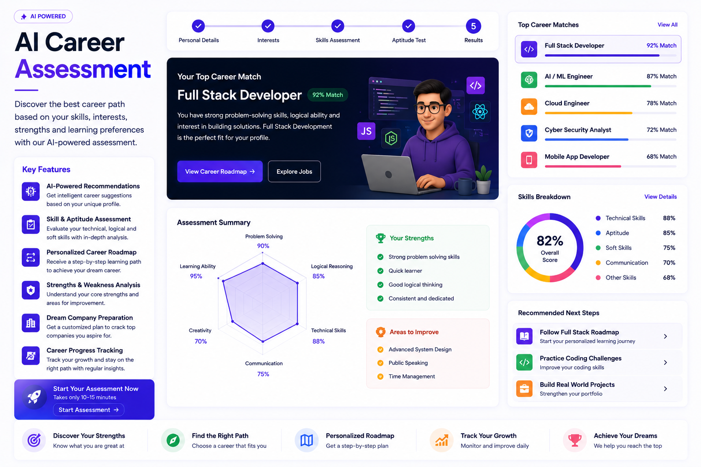
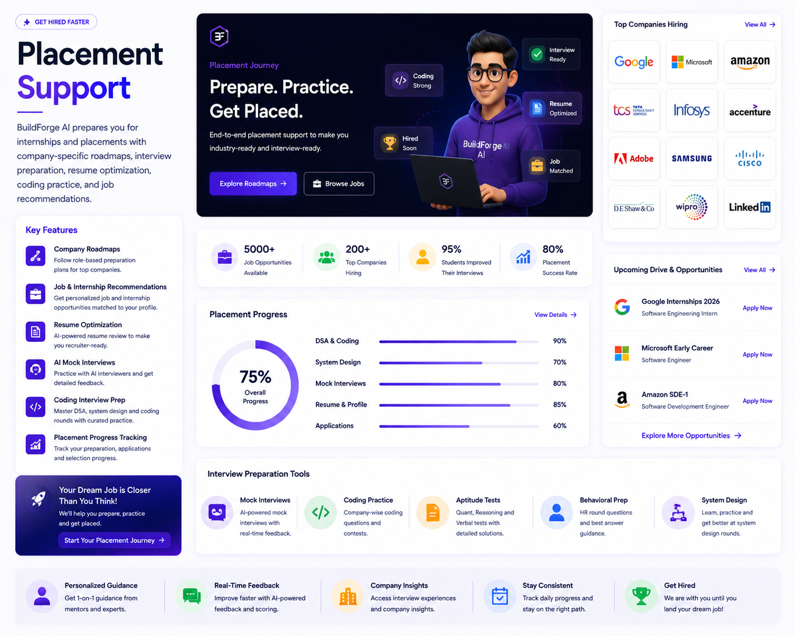

<!DOCTYPE html>
<html lang="en">
<head>
    <meta charset="UTF-8">
    <meta name="viewport" content="width=device-width, initial-scale=1.0">

    <meta
        name="description"
        content="Explore the powerful AI features of BuildForge AI including personalized learning roadmaps, AI Resume Analyzer, coding challenges, mock interviews, portfolio builder, GitHub integration, career assessment, certificates, and placement support.">

    <meta
        name="keywords"
        content="BuildForge AI, AI Learning, Learning Roadmaps, Resume Builder, AI Resume Analyzer, Coding Challenges, Mock Interviews, Portfolio Builder, GitHub Integration, Career Assessment, Placement Support, Student Platform">

    <meta
        name="author"
        content="Krishna Rastogi">

    <title>Features | BuildForge AI</title>

</head>

<body>

</body>
</html>

<body>
    <header>
        
        <h1>BuildForge AI</h1>
        <p><em>From Idea to Internship.</em></p>
        <nav>
            <ul>
                <li><a href="index.html">Home</a></li>
                <li><a href="about.html">About</a></li>
                <li><a href="features.html">Features</a></li>
                <li><a href="roadmap.html">Roadmaps</a></li>
                <li><a href="projects.html">Projects</a></li>
                <li><a href="contact.html">Contact</a></li>
                <li><a href="login.html">Login</a></li>
                <li><a href="register.html">Register</a></li>
                <li><a href="dashboard.html">Dashboard</a></li>
                <li><a href="faq.html">FAQ</a></li>
            </ul>
        </nav>
    </header>

    <main>
        <!-- Hero -->

        <!-- Hero Section -->

        <section>

            <h1>Explore BuildForge AI Features</h1>

            <p>
                Discover powerful AI-driven features designed to help
                students learn faster, build real-world projects,
                prepare for interviews, and achieve their dream careers.
            </p>

            <a href="register.html">
                <button type="button">Get Started</button>
            </a>

            <a href="pricing.html">
                <button type="button">View Pricing</button>
            </a>

            <figure>

                

                <figcaption>
                    Explore all the AI-powered tools that accelerate your learning journey.
                </figcaption>

            </figure>

        </section>

        <!-- Platform Features -->

        <section>

            <h2>Platform Features</h2>

            <p>
                BuildForge AI offers a complete set of AI-powered
                tools designed to help students learn efficiently,
                build real-world projects, improve technical skills,
                and prepare for successful careers.
            </p>

            <article>

                <h3>Everything You Need in One Platform</h3>

                <ul>

                    <li>AI-powered personalized learning experience.</li>

                    <li>Structured career roadmaps.</li>

                    <li>Real-world project development.</li>

                    <li>Coding challenges and assessments.</li>

                    <li>Resume Builder and AI Resume Analyzer.</li>

                    <li>Mock interviews for placement preparation.</li>

                    <li>Certificates and progress tracking.</li>

                    <li>Internship and job support.</li>

                </ul>

            </article>

            <figure>

                

                <figcaption>
                    A complete AI-powered platform for learning,
                    building, practicing, and getting hired.
                </figcaption>

            </figure>

        </section>

        <!-- AI Learning Roadmaps -->

        <section>

            <h2>AI Learning Roadmaps</h2>

            <p>
                Our AI-powered learning roadmaps provide personalized,
                step-by-step guidance based on your career goals,
                current skills, and learning progress.
            </p>

            <article>

                <h3>What You Get</h3>

                <ul>

                    <li>Personalized learning paths.</li>

                    <li>Beginner to advanced progression.</li>

                    <li>Daily AI-generated study plans.</li>

                    <li>Career-specific roadmaps.</li>

                    <li>Progress tracking and recommendations.</li>

                    <li>Project suggestions at every stage.</li>

                </ul>

            </article>

            <figure>

                

                <figcaption>
                    Personalized AI roadmaps designed to help students
                    achieve their career goals efficiently.
                </figcaption>

            </figure>

        </section>

        <!-- AI Resume Analyzer -->

        <section>

            <h2>AI Resume Analyzer</h2>

            <p>
                BuildForge AI analyzes your resume using Artificial
                Intelligence and provides personalized suggestions
                to improve your chances of getting shortlisted by
                top companies.
            </p>

            <article>

                <h3>Key Features</h3>

                <ul>

                    <li>Instant AI-powered resume analysis.</li>

                    <li>ATS compatibility checking.</li>

                    <li>Skill gap identification.</li>

                    <li>Grammar and formatting suggestions.</li>

                    <li>Keyword optimization for jobs.</li>

                    <li>Personalized improvement recommendations.</li>

                </ul>

            </article>

            <figure>

                

                <figcaption>
                    Optimize your resume with AI-powered insights and
                    increase your interview opportunities.
                </figcaption>

            </figure>

        </section>

        <!-- Coding Challenges -->

        <section>

            <h2>Coding Challenges</h2>

            <p>
                Improve your programming and problem-solving skills with
                AI-powered coding challenges designed for beginners,
                intermediate learners, and advanced developers.
            </p>

            <article>

                <h3>Key Features</h3>

                <ul>

                    <li>Daily coding challenges.</li>

                    <li>Beginner to advanced difficulty levels.</li>

                    <li>AI-generated coding problems.</li>

                    <li>Instant code evaluation and feedback.</li>

                    <li>Real interview-style questions.</li>

                    <li>Track your coding progress.</li>

                </ul>

            </article>

            <figure>

                

                <figcaption>
                    Practice coding every day and become interview-ready
                    with AI-powered challenges.
                </figcaption>

            </figure>

        </section>

        <!-- Mock Interviews -->

        <section>

            <h2>AI Mock Interviews</h2>

            <p>
                Practice real interview questions with AI-powered mock
                interviews that simulate actual technical and HR interview
                experiences to boost your confidence.
            </p>

            <article>

                <h3>Key Features</h3>

                <ul>

                    <li>Technical and HR interview practice.</li>

                    <li>AI-generated interview questions.</li>

                    <li>Real-time performance evaluation.</li>

                    <li>Instant AI feedback and suggestions.</li>

                    <li>Company-specific interview preparation.</li>

                    <li>Track interview improvement over time.</li>

                </ul>

            </article>

            <figure>

                

                <figcaption>
                    Practice with AI-driven mock interviews and improve
                    your confidence before real interviews.
                </figcaption>

            </figure>

        </section>

        <!-- Certificates -->

        <section>

            <h2>Certificates</h2>

            <p>
                Earn professional certificates after successfully
                completing learning roadmaps, coding challenges,
                projects, and assessments to showcase your skills
                and achievements.
            </p>

            <article>

                <h3>Key Features</h3>

                <ul>

                    <li>AI-verified completion certificates.</li>

                    <li>Download certificates in PDF format.</li>

                    <li>Share certificates on LinkedIn.</li>

                    <li>Skill-based digital badges.</li>

                    <li>Track all earned certificates.</li>

                    <li>Boost your resume with verified achievements.</li>

                </ul>

            </article>

            <figure>

                

                <figcaption>
                    Showcase your achievements with industry-ready
                    certificates and digital badges.
                </figcaption>

            </figure>

        </section>

        <!-- Portfolio Builder -->

        <section>

            <h2>Portfolio Builder</h2>

            <p>
                Create a professional portfolio website in minutes
                using AI-powered templates designed to showcase your
                skills, projects, certificates, and achievements.
            </p>

            <article>

                <h3>Key Features</h3>

                <ul>

                    <li>AI-generated portfolio templates.</li>

                    <li>Responsive professional designs.</li>

                    <li>Project and certificate showcase.</li>

                    <li>GitHub and LinkedIn integration.</li>

                    <li>One-click portfolio publishing.</li>

                    <li>Custom domain support.</li>

                </ul>

            </article>

            <figure>

                

                <figcaption>
                    Build a stunning developer portfolio that helps
                    you stand out to recruiters.
                </figcaption>

            </figure>

        </section>

        <!-- GitHub Integration -->

        <section>

            <h2>GitHub Integration</h2>

            <p>
                Connect your GitHub account to showcase repositories,
                track coding activity, and build a stronger developer
                profile directly within BuildForge AI.
            </p>

            <article>

                <h3>Key Features</h3>

                <ul>

                    <li>Connect your GitHub account securely.</li>

                    <li>Display your public repositories.</li>

                    <li>Track contribution activity.</li>

                    <li>Showcase pinned projects.</li>

                    <li>Monitor coding consistency.</li>

                    <li>Build a stronger developer portfolio.</li>

                </ul>

            </article>

            <figure>

                

                <figcaption>
                    Connect GitHub to showcase your coding journey,
                    projects, and contribution history.
                </figcaption>

            </figure>

        </section>

        <!-- Career Assessment -->

        <section>

            <h2>AI Career Assessment</h2>

            <p>
                Discover the best career path based on your interests,
                skills, strengths, and learning preferences with our
                AI-powered career assessment system.
            </p>

            <article>

                <h3>Key Features</h3>

                <ul>

                    <li>AI-powered career recommendations.</li>

                    <li>Skill and aptitude assessment.</li>

                    <li>Personalized career roadmap.</li>

                    <li>Strength and weakness analysis.</li>

                    <li>Dream company preparation plan.</li>

                    <li>Career progress tracking.</li>

                </ul>

            </article>

            <figure>

                

                <figcaption>
                    Find the right career path with intelligent AI-based
                    assessment and personalized guidance.
                </figcaption>

            </figure>

        </section>

        <!-- Placement Support -->

        <section>

            <h2>Placement Support</h2>

            <p>
                BuildForge AI prepares you for internships and placements
                with company-specific roadmaps, interview preparation,
                resume optimization, coding practice, and job recommendations.
            </p>

            <article>

                <h3>Key Features</h3>

                <ul>

                    <li>Company-specific preparation roadmaps.</li>

                    <li>Internship and job recommendations.</li>

                    <li>Resume optimization for recruiters.</li>

                    <li>AI-powered mock interviews.</li>

                    <li>Coding interview preparation.</li>

                    <li>Placement progress tracking.</li>

                </ul>

            </article>

            <figure>

                

                <figcaption>
                    Prepare smarter, crack interviews, and land your dream job
                    with comprehensive placement support.
                </figcaption>

            </figure>

        </section>

        <!-- Call To Action -->

        <section>

            <h2>Start Building Your Dream Career Today</h2>

            <p>
                Join thousands of students who are learning smarter,
                building real-world projects, and preparing for top
                internships and placements with BuildForge AI.
            </p>

            <article>

                <h3>Why Choose BuildForge AI?</h3>

                <ul>

                    <li>7 Days Free Trial.</li>

                    <li>AI-Powered Personalized Roadmaps.</li>

                    <li>Industry-Level Projects.</li>

                    <li>Resume Builder & AI Resume Analyzer.</li>

                    <li>Coding Challenges & Mock Interviews.</li>

                    <li>Placement & Internship Support.</li>

                </ul>

            </article>

            <a href="register.html">
                <button type="button">Start Free Trial</button>
            </a>

            <a href="pricing.html">
                <button type="button">View Pricing</button>
            </a>

            <figure>

                

                <figcaption>
                    Take the first step toward your dream career with
                    BuildForge AI today.
                </figcaption>

            </figure>

        </section>
    </main>

    <footer>
        <section>

            <h2>BuildForge AI</h2>

            <p><em>From Idea to Internship.</em></p>

            <p>
                BuildForge AI helps students learn in-demand skills,
                build real-world projects, and prepare for internships
                and placements.
            </p>

        </section>

        <section>

            <h3>Quick Links</h3>

            <nav>
                <ul>

                    <li><a href="index.html">Home</a></li>

                    <li><a href="about.html">About</a></li>

                    <li><a href="roadmap.html">Roadmaps</a></li>

                    <li><a href="projects.html">Projects</a></li>

                    <li><a href="features.html">Features</a></li>

                    <li><a href="contact.html">Contact</a></li>

                </ul>
            </nav>

        </section>

        <section>

            <h3>Resources</h3>

            <ul>

                <li><a href="#">Blog</a></li>

                <li><a href="#">Documentation</a></li>

                <li><a href="#">Tutorials</a></li>

                <li><a href="#">Community</a></li>

                <li><a href="#">Help Center</a></li>

            </ul>

        </section>

        <section>

            <h3>Contact Us</h3>

            <address>

                Email :
                <a href="mailto:support@buildforgeai.com">
                    support@buildforgeai.com
                </a>

                <br><br>

                Phone :
                <a href="tel:+919876543210">
                    +91 98765 43210
                </a>

                <br><br>

                Mathura, Uttar Pradesh, India

            </address>

        </section>

        <section>

            <h3>Follow Us</h3>

            <ul>

                <li><a href="#">GitHub</a></li>

                <li><a href="#">LinkedIn</a></li>

                <li><a href="#">Instagram</a></li>

                <li><a href="#">YouTube</a></li>

                <li><a href="#">Discord</a></li>

            </ul>

        </section>

        <hr>

        <p>
            &copy; 2026 BuildForge AI. All Rights Reserved.
        </p>

        <p>
            Made with ❤️ by Krishna Rastogi
        </p>

        <a href="#top">
            Back to Top ↑
        </a>
    </footer>
</body>

</html>